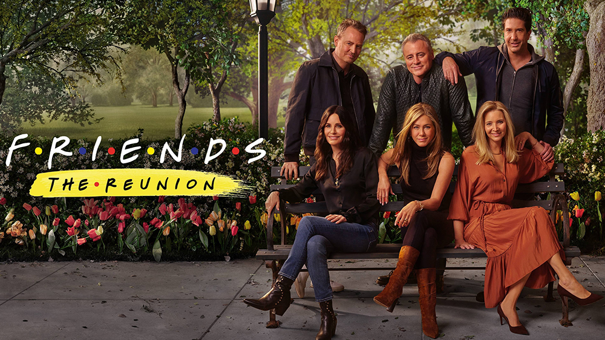

Friends: The Reunion

Friends: The Reunion, también conocido como The One Where They Get Back Together, es un especial de reunión de 2021 de la comedia estadounidense Friends. El episodio está producido por los cocreadores de la serie, Marta Kauffman y David Crane, Kevin S. Bright y Ben Winston. En este episodio sin guión, el reparto principal vuelve a visitar los decorados de la serie original (como los apartamentos, la cafetería Central Perk y la fuente de agua), se reúnen con invitados que aparecieron en la serie y con famosos, hacen lecturas de mesa, recreaciones de episodios antiguos de Friends y comparten imágenes entre bastidores.